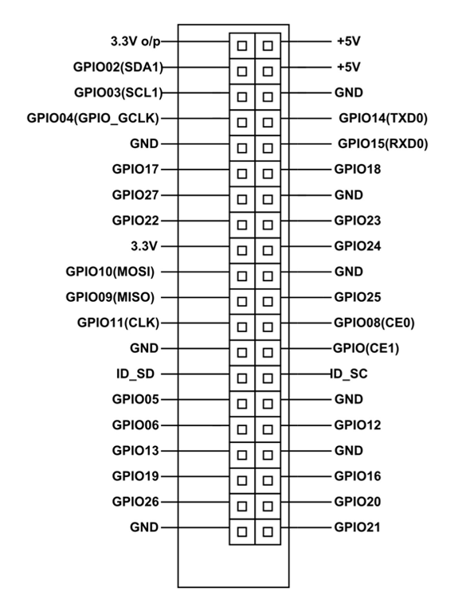

Raspberry pi 3 is a development board in PI series. It can be considered as a single board computer that works on LINUX operating system. The board not only has tons of features it also has terrific processing speed making it suitable for advanced applications. PI board is specifically designed for hobbyist and engineers who are interested in LINUX systems and IoT (Internet of Things).
Pin Configuration
| Pin Group | Pin Name | Description |
|---|---|---|
| POWER SOURCE | ||
| COMMUNICATION INTERFACE | UART Interface(RXD, TXD) [(GPIO15,GPIO14)] | UART (Universal Asynchronous Receiver Transmitter) used for interfacing sensors and other devices. |
| SPI Interface(MOSI, MISO, CLK,CE) x 2 [SPI0-(GPIO10 ,GPIO9, GPIO11 ,GPIO8)] [SPI1--(GPIO20 ,GPIO19, GPIO21 ,GPIO7)] | SPI (Serial Peripheral Interface) used for communicating with other boards or peripherals. | |
| TWI Interface(SDA, SCL) x 2 [(GPIO2, GPIO3)] [(ID_SD,ID_SC)] | TWI (Two Wire Interface) Interface can be used to connect peripherals. | |
| INPUT OUTPUT PINS | 26 I/O | Although these some pins have multiple functionsthey can be considered as I/O pins. |
| PWM | Hardware PWM available on GPIO12, GPIO13, GPIO18, GPIO19 |
These 4 channels can provide PWM (Pulse Width Modulation) outputs. *Software PWM available on all pins |
| EXTERNAL INTERRUPTS | All I/O | In the board all I/O pins can be used as Interrupts. |
Technical Specifications
| Microprocessor | Broadcom BCM2837 64bit Quad Core Processor |
| Processor Operating Voltage | 3.3V |
| Raw Voltage input | 5V, 2A power source |
| Maximum current through each I/O pin | 16mA |
| Maximum total current drawn from all I/O pins | 54mA |
| Flash Memory (Operating System) | 16Gbytes SSD memory card |
| Internal RAM | 1Gbytes DDR2 |
| Clock Frequency | 1.2GHz |
| GPU |
Dual Core Video Core IV® Multimedia Co-Processor. Provides Open GLES 2.0, hardware-accelerated Open VG, and 1080p30 H.264 high- profile decode. Capable of 1Gpixel/s, 1.5Gtexel/s or 24GFLOPs with texture filtering and DMA infrastructure. |
| Ethernet | 10/100 Ethernet |
| Wireless Connectivity | BCM43143 (802.11 b/g/n Wireless LAN and Bluetooth 4.1) |
| Operating Temperature | -40ºC to +85ºC |
Board Connectors
| Ethernet | Base T Ethernet Socket |
|---|---|
| USB | 2.0 (Four sockets) |
| Audio Output | 3.5mm Jack and HDMI |
| Video output | HDMI |
| Camera Connector | 15-pin MIPI Camera Serial Interface (CSI-2) |
| Display Connector | Display Serial Interface (DSI) 15 way flat flex cable connector with two data lanes and a clock lane. |
| Memory Card Slot | Push/Pull Micro SDIO |
Where is it used?
Raspberry pi platform is most used after Arduino. Although overall applications of PI are less it is most preferred when developing advanced applications. Also the Raspberry pi is an open source platform where one can get a lot of related information so you can customize the system depending on the need.
Here are few examples where Raspberry pi 3 is chosen over other microcontrollers and development boards:
-
Where the system processing is huge. Most Arduino boards all have clock speed of less than 100MHz, so they can perform functions limited to their capabilities. They cannot process high end programs for applications like Weather Station, Cloud server, gaming console etc. With 1.2GHz clock speed and 1 GB RAM Raspberry pi can perform all those advanced functions.
-
Where wireless connectivity is needed. Raspberry pi 3 has wireless LAN and Bluetooth facility by which you can setup WIFI HOTSPOT for internet connectivity. For Internet of Things this feature is best suited.
-
Raspberry pihad dedicated port for connecting touch LCD display which is a feature that completely omits the need of monitor.
-
Raspberry pi also has dedicated camera port so one can connect camera without any hassle to the PI board.
-
Raspberry pi also has PWM outputs for application use.
There are many other features like HD steaming which further promote the use of Raspberry pi.
How to use
As mentioned earlier PI is simply a computer on a single board so it cannot be used like Arduino development boards. For the PI to start working we need to first install operating system. This feature is similar to our PC. The PI has dedicated OS for it; any other OS will not work.
Dimensions